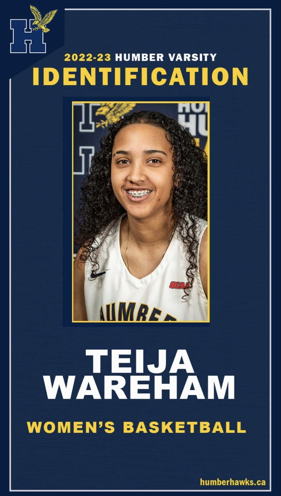

Teija Wareham aka "Tei Smoove"
I am a student athlete currently attending
Humber College in Ontario. I am currently studying Graphic Design.... I have attended Humber College since 2019.
Combining my passion for athletics with my love for visual arts and creativity, I find fulfillment in the dynamic intersection of sports and design. Balancing the demands of training, competitions, and coursework, I have developed invaluable skills in time management, discipline, and teamwork. Immersed in the vibrant creative community at Humber College, I collaborate with talented peers and experienced instructors to refine my skills in digital design, typography, and visual storytelling. As I represent Humber College in intercollegiate sports, I am fueled by resilience and a strong work ethic, striving for excellence both on and off the field. Looking ahead, I aspire to create visually captivating designs that make a positive impact, evoking emotion and inspiring change. My journey as a student athlete studying Graphic Design has been an incredible opportunity for personal growth, academic excellence, and the pursuit of my passions, and I eagerly anticipate embracing new challenges and contributing to the world of design and athletics in meaningful ways.

Activities I Like
- Playing Basketball
- Walks on a nice night
- Eating at AYCE Sushi Restaurants
- Spending Time with my Girlfriend and Dog
Favorite Artists in Order
★ ★ ★ ★ ★